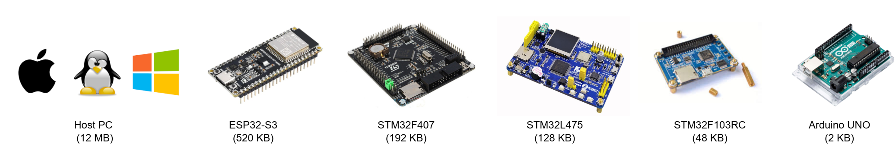
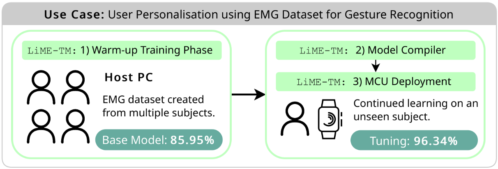
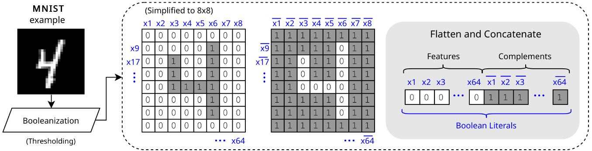
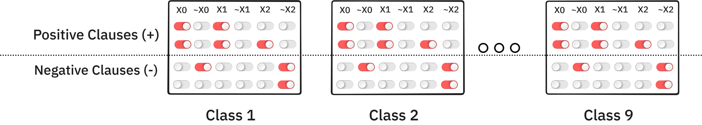

LiME-TM: A Lightening Fast and Memory Efficient ML Framework for MCUs
On-Device Training
Han Wu, Newcastle University

Machine Learning: Random Forest, Decision Trees, Neural Networks, Tsetlin Machines (TM) ...
Are Neural Networks suitable for MCUs?
- Neural Networks
- Computation intensive (GPU)
- Memory hungry
- Floating Point
- MCUs
- Limited computation power (no GPU)
- Limited memory (e.g., 256KB RAM)
- INT32, INT16, INT8
Why is On-Device Training Important?
Data Distribution Shift
- Evolving Environment
- Sensor Degradation
- User Personalization

Why training on MCUs is challenging?
Resource Constraints
- Memory: GB to KB
- Compute: GHz to MHz
- Energy: W to mW
Introduction to Tsetlin Machine
Tsetlin Machine (Inference)


Tsetlin Machine (Training)
Random Number Generator
Thanks
- On-Device Training: 20 KB SRAM
- On-Device Inference: 2 KB SRAM
Source Code